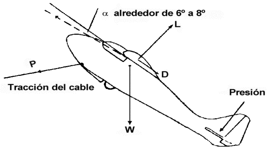
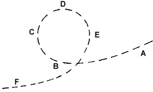
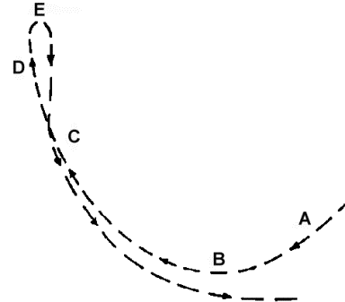
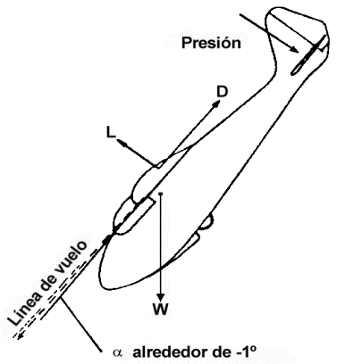

Teoría de Vuelo para Pilotos de Planeador
Stafford Allen
Capítulo X
UN ANALISIS DE ALGUNAS CONDICIONES
ANORMALES DE VUELO
LA PUESTA EN VUELO
Antes de
que un planeador pueda volar debe ser puesto en el aire por un medio u otro. Dejando de
lado el uso de cohetes, que por el momento es muy caro y se encuentra en la etapa
experimental, los cuatro métodos usuales son: catapulta o sandows, remolque por
auto, remolque por torno y remolque por avión. En todos estos sistemas tiene que
aplicarse una fuerza externa al planeador para colocarlo en el aire, por lo que las
condiciones en ese momento son algo diferentes a las del vuelo ordinario. Veamos primero
el sistema de catapulta o sandows.
La puesta
en vuelo por medio de sandows tiene lugar normalmente desde la cima de una colina,
pero las prácticas pueden hacerse en un lugar llano. El sandow es, simplemente,
una cuerda larga elástica que tiene en su parte central o media una argolla de acero. Un
pedazo corto de soga, generalmente con nudos para proporcionar un buen agarre, se ubica en
cada punta de la cuerda elástica. El planeador es transportado a la cima de la colina,
situándose en el borde, y la cuerda elástica se dispone hacia afuera, frente al
planeador, formando una V. La argolla situada en el centro de la cuerda se calza en un
gancho abierto ubicado en la parte inferior de la nariz del planeador. Cuatro personas se
sitúan en cada extremo, toman la soga anudada y esperan una señal del piloto. Mientras
tanto otra persona sujeta el patín de cola para retener el planeador. A una señal dada
los dos equipos de cuatro personas corren hacia adelante estirando la cuerda de goma.
Cuando el que sujeta el patín de cola no puede aguantarlo más, lo suelta y el planeador
se acelera hacia adelante y comienza a volar hacia el valle, dejando caer la argolla y la
cuerda de goma.
El
planeador no debe ser cabreado por el piloto sino que debe volar horizontalmente hacia la
ascendencia de la colina. Esto es importante ya que al moverse hacia adelante en el
comienzo del remolque, el viento es más o menos horizontal, mientras que a unos pocos
metros afuera, hacia el valle, en la ascendencia dinámica, sopla más o menos hacia
arriba. En consecuencia, a medida que vuela hacia esta área el planeador incrementa su
ángulo de ataque sin ningún cambio de actitud. Si el planeador es objeto de un despegue
muy pobre y vuela muy cerca de la velocidad de pérdida, este incremento en el ángulo de
ataque puede ser suficiente para hacerlo entrar en pérdida. Por lo tanto, si hay alguna
duda sobre la fuerza del remolque, el piloto debe, para ganar seguridad, bajar la nariz y
picar suavemente hacia afuera del punto de partida hasta estar seguro de que tiene
suficiente velocidad.
La fuerza
del lanzamiento cuando se utilizan sandows se
aplica en la proa, en la dirección del eje longitudinal y no implica mucha carga extra
para el planeador, excepto en el punto de enganche. Esta es la zona de la estructura que
previene que las alas se doblen hacia atrás. Sin embargo, muchos pilotos se sorprenden
después de su primer lanzamiento por la muy baja aceleración. Lejos de sentirse
violentamente lanzado hacia el valle, la sensación es de suavidad y el lanzamiento ha
concluido casi antes de haber empezado.
Desde el
punto de vista del planeador los remolques por auto y por torno son muy similares. En
ambos casos el planeador es remolcado por medio de un largo cable o soga. Al comienzo del
remolque el cable permanece en el suelo, por lo que la tracción es horizontal. Tan pronto
como el planeador tiene suficiente velocidad para elevarse del suelo trepa en forma
progresiva sobre el punto en que el auto o el torno ejercen la tracción en el cable. Esto
significa que la tracción del cable cambia de dirección en el planeador a medida que se
desarrolla el lanzamiento. En las etapas iniciales la tracción es en dirección de popa a
proa, y en el tope del remolque es casi hacia abajo o, lo que significa lo mismo, casi a
ángulo recto con la cuerda alar. Por esta razón el cable debe sujetarse al planeador en
un gancho cerrado, que el piloto opera cuando desea quedar en vuelo libre.
En realidad, muchos ganchos disparadores tienen un dispositivo
de seguridad que hace caer el cable automáticamente si la tracción excede cierto
ángulo. Cuando el cable está arrastrando al planeador más o menos en dirección popa a
proa, un remolque fuerte sólo acelerará al planeador hacia adelante, incrementando por
lo tanto su velocidad. Las cargas en la estructura, en consecuencia, son relativamente
pequeñas, excepto en el gancho disparador. Sin embargo, tan pronto como el planeador
comienza a trepar las cosas son muy distintas. La figura 23 ilustra este estado de cosas. 
Figura 23 – Remolque por torno o auto
Lo primero
que vemos es que la sustentación en el ala es mucho mayor que el peso, ya que tiene que
compensar también a la fuerza hacia abajo del cable, P. Normalmente, si la sustentación
es mucho mayor que el peso el piloto se siente presionado contra su asiento, porque el
planeador se está acelerando en la dirección de la sustentación, pero en este caso
particular el piloto no lo siente ya que dos fuerzas -sustentación y tracción del cable-
se encuentran actuando en direcciones más o menos opuestas mientras el piloto se halla
sentado en la conexión entre los dos, es decir, el planeador.
El piloto
bien puede no darse cuenta de la gran sustentación que tienen las alas y, por lo tanto,
es bueno recalcar que las cargas en el ala son considerables en un remolque por auto o
torno. Si las condiciones son turbulentas y la velocidad de remolque es alta, las cargas
pueden ser muy elevadas. Por esta razón todos los planeadores tienen una indicación en
la cabina que establece la velocidad máxima permitida en remolque por auto, tomo y
avión. Para prevenir que esas cargas lleguen a límites peligrosos, el cable debe poseer
un fusible en
la parte próxima al planeador. Este fusible, que
consiste en una sección de cable o soga más delgada, se rompe si la tracción supera
cierto valor.
El segundo
punto es que la tracción del cable sobre el planeador actúa bien en contra y por delante
de la sustentación. Esto da al planeador una tendencia a bajar la nariz, lo cual debe ser
equilibrado haciendo bajar la cola. El piloto tiende a compensar esta carga poniendo
palanca atrás para subir el elevador. Esto, por supuesto, es una tontería porque no
sólo da lugar a un poco más de resistencia extra, sino que el ala tiene que producir
mayor sustentación aun para equilibrar esta carga en la cola. El remedio para este
problema, que inmediatamente se pone de manifiesto por sí mismo, es desplazar el gancho
disparador, es decir, el punto en que tracciona el cable, más atrás, de tal manera que
la sustentación y la tracción del cable actúen más cerca, en línea recta.
Actualmente
esto se hace en casi todos los planeadores y el gancho disparador se denomina gancho de centro de gravedad. Su
posición debe elegirse con sumo cuidado ya que, si se ubica muy atrás el planeador
muestra una pronunciada tendencia a elevar la nariz desde el comienzo del remolque. Esta
es una mala condición porque si el cable llega a romperse o el torno falla cuando el
planeador se encuentra con la nariz muy arriba cerca del suelo, puede que no haya
suficiente altura para recobrar la máquina de la pérdida resultante. Es por esta razón
que el instructor enseña a trepar los primeros 50 metros
en forma suave, en particular si el viento es débil. También debe hacer presente que, si
se observa esta regla, aunque el cable se rompa en cualquier momento no habrá ningún
problema. Los remolques por tomo y auto pueden dar a los planeadores alturas de 300 metros
o más, lo cual depende de circunstancias tales como fuerza del viento, largo del cable y
de la pista, tipo de planeador, etc.
El
remolque por avión se lleva a cabo con la ayuda de un avión a motor que posee un gancho
disparador situado atrás, por lo general en el patín de cola. Para el remolque se
utilizan de 40 a 60 metros de soga liviana. El planeador debe tener preferentemente un
gancho disparador en la nariz, ya que esto reduce la tendencia a elevar la proa del
velero, lo cual ocurre si la tracción se ejerce sobre el gancho ubicado en la panza del
aparato. Muchos aviones aptos para remolque tienen una velocidad de pérdida bastante más
alta que la de los planeadores, lo cual significa que este último, en remolque, debe
volar mucho más rápido de lo normal. Como resultado de ello el piloto deberá resistir
la tendencia a trepar que mostrará la máquina. Además, dado que el ángulo de ataque de
las alas será muy pequeño debido a la alta velocidad, el centro de presión en el ala se
desplazará más atrás de lo habitual. Ello da como resultado una carga hacia abajo en la
cola.
A todas
estas cargas debe agregarse la tracción de la soga. Esta tracción deberá ser más o
menos en dirección popa a proa, pero cuando el diseñador determina la velocidad de
remolque máxima permitida debe tener en cuenta todas las distintas direcciones en que
puede traccionar la soga si el planeador se encuentra descolocado durante el remolque.
Cuando está siendo remolcado, el piloto de planeador se esfuerza por volar recto detrás
del avión, pero tanto arriba como abajo hay corrientes de aire. Esta es la turbulencia
provocada por la hélice. La posición de remolque debe ser justamente por encima de la
turbulencia y esto da al piloto remolcador la mejor posibilidad de ver qué está
ocurriendo detrás suyo.
Cuando un
avión remolcador y un planeador están virando tiene lugar un curioso fenómeno. Durante
el viraje el piloto del planeador debe tener la misma vista del remolcador que en el
remolque en línea recta, es decir, el plano fijo de cola del avión ubicado en el centro
del fuselaje. Si vemos este panorama en el viraje significará que la tracción de la soga
respecto del avión está en línea con el eje del fuselaje, lo cual es correcto, pero el
remolque no permanecerá siempre delante del planeador como en el vuelo en línea recta.
Se ubicará hacia el lado del viraje. Por lo tanto, la soga ejerce una fuerza lateral
sobre el planeador, en la dirección del viraje. Esto significará que el planeador no
necesitará tanta inclinación como de costumbre. El viraje parecerá mal hecho y la
bolita mostrará un derrape, pero a pesar de ello el viraje estará hecho correctamente.
Esto puede comprobarse instalando un hilo en algún punto tal como el tubo pitot, frente
al piloto. Este hilo se mantendrá recto hacia atrás si el viraje está bien hecho.
ACROBACIA
Las
maniobras acrobáticas permitidas a planeadores son, por lo general, looping, pérdida,
media vuelta y tirabuzón. Sólo en el caso de planeadores especialmente diseñados la
lista puede incluir toneles y vuelo invertido. En la cabina se hallará una pequeña placa
que determina qué maniobras acrobáticas son permitidas.
En un
capítulo anterior hemos dedicado un buen espacio al tirabuzón, por lo que no diremos
más al respecto. El looping es una maniobra fácil y simple, pero resulta interesante
analizarla. Consiste en una circunferencia completa que efectúa el planeador en el plano
vertical. Esto requiere energía extra, por lo que la primera exigencia es obtener
velocidad adicional.
La
energía extra requerida varía según los distintos tipos de planeadores y debe
obtenerse, por supuesto, picando la máquina. Esta picada debe ser razonablemente suave
porque si es muy pronunciada parte de la velocidad adquirida será utilizada en la salida
de la picada antes de comenzar el looping.
Figura 24 - Looping

La figura 24 muestra el camino recorrido por un planeador en un looping. Habiendo picado y ganado la velocidad adicional requerida, el piloto comienza el looping en el punto A. En la picada la velocidad del aire será elevada -del orden de 140 a 180 kilómetros por hora-y en consecuencia el ángulo de ataque deberá ser muy pequeño, tal vez de 1 a 2 grados. En el punto A el piloto comienza a elevar la nariz del planeador suavemente y en el punto B el ángulo de ataque deberá incrementarse en unos 5 a 6 grados.
Esto es
debido a que vamos a necesitar una fuerza de sustentación equivalente a dos o tres veces
el peso del planeador. La sustentación no sólo está soportando el peso del planeador
sino que aporta la gran fuerza (centrípeta) necesaria para que el planeador siga el
desplazamiento curvo. En el punto C el planeador está desplazándose verticalmente hacia
arriba y la sustentación actúa en forma horizontal, con lo que aporta sólo la fuerza
centrípeta. Nada se opone en este momento al peso de la máquina, excepto la inercia del
planeador, por lo que éste desacelerará con rapidez.
Entre A y
C es donde el piloto puede completar o cerrar el looping.
Si no
llama con bastante firmeza el planeador habrá perdido una gran parte de la velocidad
cuando llega a C. El looping será grande, lento en la parte superior y el planeador
parecerá caer en el tope en lugar de completar el circulo volando. Si, por otro lado,
llama muy bruscamente en A, aumentará el ángulo de ataque más de lo necesario, la
sustentación será muy grande y lo mismo ocurrirá con la resistencia; el looping será
muy cerrado.
Si
aceptamos que el piloto llama correctamente, llegará al punto D invertido y con una
velocidad cercana a la de pérdida. Ahora la sustentación está actuando verticalmente
hacia abajo y está ayudando al peso a aportar la fuerza centrípeta. Esto puede parecer
sorprendente al principio, pero en un looping correctamente ejecutado el piloto no
tenderá a caer de su asiento. Desde un punto de vista lógico la sustentación está
presionando el asiento hacia abajo. En el punto D la velocidad será mínima y la palanca
probablemente se encontrará por completo atrás. Desde el punto D el planeador continúa
el círculo hasta el punto E, donde las condiciones son muy parecidas a las del punto C,
excepto que aquí el peso hace que el aparato se acelere muy rápidamente. Desde el punto
E hasta el F la maniobra consiste simplemente en salir de una picada y el objetivo del
piloto es recuperar el nivel de vuelo sin causar una carga excesiva sobre el planeador y
sin demasiado aumento de velocidad o pérdida de altura. Si se hace correctamente, la
velocidad y la carga al final del looping deben ser similares a las condiciones existentes
al comienzo de la maniobra.
Una media
vuelta es, en sus etapas iniciales, muy similar a un looping.
Figura 25 – Media vuelta

La figura 25 ilustra en forma grosera el camino que sigue el planeador. Se comienza con una ligera picada para ganar velocidad y luego se llama progresivamente hasta que se encuentra en posición vertical. Desde los puntos A -B hasta el punto C la maniobra básicamente es la misma del looping, pero una vez que el planeador se encuentra desplazándose en forma vertical hacia arriba, el piloto deja de mover la palanca y simplemente usa el elevador para mantener el aparato vertical. El peso y la resistencia se encuentran ahora actuando verticalmente hacia abajo sin que nada se oponga, por lo que el planeador desacelerará con rapidez.
En algún
lugar entre los puntos C y D el piloto aplica todo el pedal en la dirección en que desea
virar. Si lo hace con limpieza y en el momento exacto, el planeador girará sobre sí
mismo en el punto E hasta yacer de costado con la punta de un ala hacia arriba y la otra
hacia abajo. El planeador entonces cae en forma vertical de costado, la estabilidad
direccional se acrecienta y hace girar la nariz hacia abajo en forma vertical hasta que la
máquina se encuentra otra vez apuntando en la dirección en que se desplazaba. Desde
aquí la maniobra es simple: una suave llamada para salir de la picada y nivelar el vuelo.
Aquí se aplica exactamente la misma consideración que en la parte final del looping.
La media
vuelta es mal mirada actualmente porque existe un verdadero riesgo si no se lleva a cabo
con corrección. El peligro principal es que si el piloto tarda mucho en aplicar timón de
dirección la velocidad del planeador puede disminuir demasiado mientras trepa
verticalmente, a tal punto que el timón no tendrá un efecto apreciable. Entonces, el
planeador queda apuntando en forma vertical hacia arriba y en lugar de girar sobre su eje
vertical puede empezar a caer. Esta es una caída de cola y debe ser evitada como la
peste. El planeador está completamente fuera de control cuando este movimiento comienza y
si adquiere suficiente velocidad en su caída hacia atrás, las superficies de control
bien pueden sufrir daños.
No podemos
terminar con el tema de las maniobras acrobáticas sin decir unas pocas palabras sobre las
picadas a alta velocidad. Todos los planeadores tienen una velocidad máxima permitida,
que figura en la cabina, y muchos alumnos se ven confundidos por esto. A primera vista
podría pensarse que si ponemos la nariz del planeador vertical hacia abajo, la velocidad
se incrementará hasta que la resistencia iguale al peso y luego todo estará de nuevo en
equilibrio, permaneciendo la velocidad constante. Esto es verdad, pero sólo la mitad de
la verdad.
Con un
planeador con buenos frenos es cierto si los frenos están afuera. En
esta etapa la resistencia es tan grande que el planeador no puede sobrepasar su velocidad
máxima permitida, aún en una picada vertical. Con los frenos adentro, sin embargo,
ocurre algo distinto. Mucho antes de alcanzar una velocidad donde la resistencia -ahora
pequeña- llegue a igualar al peso habrán tenido lugar otras cosas.
Para
comprender plenamente la situación echemos un vistazo a la figura 26.
Figura
26 – Picada de alta velocidad

Como hemos visto anteriormente, si el ángulo de ataque es pequeño el centro de presión o punto donde actúa la sustentación estará ubicado muy atrás. En consecuencia, a pesar de que la sustentación puede ser muy pequeña, hay un gran momento de cabeceo que tiende a hacer girar el fuselaje en sentido contrario al movimiento de las agujas del reloj, como se ve en la figura 26.
Para
contraponerse a esto hay una gran carga hacia abajo en la cola del planeador, lo cual
causa enorme tensión sobre el fuselaje. Como si esto no fuera suficiente ahora las alas
están sujetas a una gran flexión. Esto se debe al alabeo que se encuentra presente en
casi todos los planeadores. Esto trabaja de la siguiente manera. Supongamos que hay un
alabeo de 3 grados en el ala, desde la raíz a la punta. Si el ángulo de ataque de la
raíz es de -1 grado, el ángulo de ataque de la punta será de -4 grados y esto
probablemente significa que las puntas de las alas no producen ninguna sustentación, sino
que están presionando hacia abajo.
Resulta
ahora claro que prácticamente todas las partes de la estructura de un planeador están
sujetas a una gran tensión. La resistencia que ofrece un planeador moderno es muy baja y,
en consecuencia, la velocidad en la cual la resistencia iguala al peso es fantásticamente
alta y antes de llegar a esa velocidad la estructura de la máquina está en peligro de
destrozarse. Sin embargo el diseñador y el encargado de establecer las tensiones que
habrá de soportar el planeador han tenido gran cuidado de asegurar que el mismo sea, para
todos los intentos y propósitos, indestructible en el aire siempre que se vuele dentro de las
limitaciones de velocidad y carga establecidas en el certificado de aeronavegabilidad.
Por lo
tanto, no se
piense que estas limitaciones, que deben encontrarse claramente establecidas en la cabina
de todo planeador, está allí por gusto. Se encuentran en ese lugar para su
seguridad.
Volver Arriba